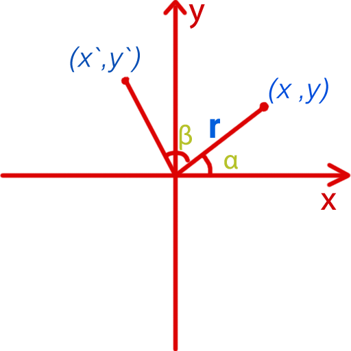

陈剑鑫 → jasonChen → JC
UC RED d4工作室 前端开发工程师
国际 活动营销
沉迷于编程动画、WebGL等图形技术
想和大家叨叨的一些内容
常见的动画与矩阵的关系
矩阵几何意义，手撕demo
谈谈AR，demo实现
谈谈VR，demo体验
移动端性能优化建议
Q&A
2d的绘图环境、形状、文字、位图
上面那些对物体的各种变换都是利用矩阵来实现的
线性代数、多项式方程组
几何意义：描述几何空间的仿射变换
|m00 m01 m02 m03|
|m10 m11 m12 m13|
|m20 m21 m22 m23|
|m30 m31 m32 m33|
| x` | |m00 m01 m02 m03| | x |
| y` | = |m10 m11 m12 m13| * | y |
| z` | |m20 m21 m22 m23| | z |
| w` | |m30 m31 m32 m33| | w |
x` = m00*x + m01*y + m02*z + m03*w
y` = m10*x + m11*y + m12*z + m13*w
z` = m20*x + m21*y + m22*z + m23*w
w` = m30*x + m31*y + m32*z + m33*w
定理
|1 0 0 0|
|0 1 0 0|
|0 0 1 0|
|0 0 0 1|
乘以待变化的坐标(x,y,z,w) 探索单位矩阵的几何意义 =>
|x`| |1 0 0 0| |x|
|y`| = |0 1 0 0| * |y|
|z`| |0 0 1 0| |z|
|w`| |0 0 0 1| |w|
x` = 1*x + 0*y + 0*z + 0*w = x
y` = 0*x + 1*y + 0*z + 0*w = y
z` = 0*x + 0*y + 1*z + 0*w = z
w` = 0*x + 0*y + 0*z + 1*w = w
各种变换矩阵
位移矩阵 缩放矩阵 X轴旋转矩阵
|1 0 0 tx| |sx 0 0 0| |1 0 0 0|
|0 1 0 ty| |0 sy 0 0| |0 cosβ sinβ 0|
|0 0 1 tz| |0 0 sz 0| |0 -sinβ cosβ 0|
|0 0 0 1| |0 0 0 1| |0 0 0 1|
Y轴旋转矩阵 Z轴旋转矩阵
|cosβ 0 sinβ 0| |cosβ -sinβ 0 0|
| 0 1 0 0| |sinβ cosβ 0 0|
|-sinβ 0 cosβ 0| | 0 0 1 0|
| 0 0 0 1| | 0 0 0 1|
旋转功能 rotateZ(βdeg) 矩阵推导

r = √(x^2+y^2)
// 单位圆得到等式
x` = cos(β+α) * r
y` = sin(β+α) * r
// 和差化积公式
sin(β+α) = sin(β)cos(α) + cos(β)sin(α)
cos(β+α) = cos(β)cos(α) - sin(β)sin(α)
cos(α) = x/r
sin(α) = y/r
// 愉快的代入
x` = (cos(β)x/r - sin(β)y/r) * r = cos(β)x - sin(β)y
y` = (sin(β)x/r + cos(β)y/r) * r = sin(β)x + cos(β)y
所以猜想旋转矩阵 =>
|cos(β) -sin(β)|
|sin(β) cos(β)|
验证下 =>
|x`| |cos(β) -sin(β)| |x|
|y`| = |sin(β) cos(β)| * |y|
x` = cos(β)x - sin(β)y
y` = sin(β)x + cos(β)y
位移矩阵
|1 0 0 tx|
|0 1 0 ty|
|0 0 1 tz|
|0 0 0 1|
X轴旋转矩阵 Y轴旋转矩阵 Z轴旋转矩阵
|1 0 0 0| |cosβ 0 sinβ 0| |cosβ -sinβ 0 0|
|0 cosβ sinβ 0| | 0 1 0 0| |sinβ cosβ 0 0|
|0 -sinβ cosβ 0| |-sinβ 0 cosβ 0| | 0 0 1 0|
|0 0 0 1| | 0 0 0 1| | 0 0 0 1|
位移矩阵 X轴旋转矩阵 Y轴旋转矩阵
|1 0 0 tx| |1 0 0 0| |cosβ 0 sinβ 0|
|0 1 0 ty| |0 cosβ sinβ 0| | 0 1 0 0|
|0 0 1 tz| |0 -sinβ cosβ 0| |-sinβ 0 cosβ 0|
|0 0 0 1| |0 0 0 1| | 0 0 0 1|
4*4列矩阵配合canvas 2d完成三维效果
矩阵在AR上的的应用
讲讲原理
浏览器对媒体硬件的支持、视频图像内容的实时读取
矩阵在VR上的的应用
先上原理：干啥都得先懂原理
移动端动画开发需要注意什么
| 方 案 | 使用建议 |
|---|---|
| CSS3 | 适合运动简单的、运动的物体少的，注意合成层的问题，为页面规划合理的合成层 |
| SVG | 当动画的元素都是一些几何形状、线条的时候，物体数量在20个以下的时候 |
| canvas | 当上面两种情况不适用的时候，动画比较复杂 |
| webgl 2d | 有大量的同层级的物体渲染的时候，可以使用batch技术实现打包渲染 |
| webgl | 有大量的三维效果 |